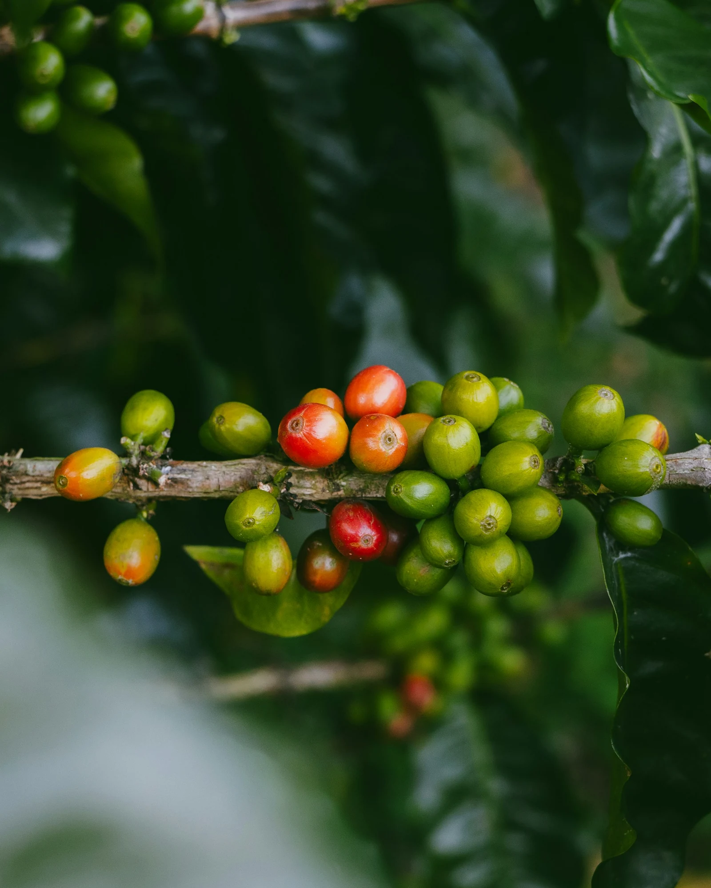

Coffee Guide · 01 / Origins
Every bean
has a story.
เริ่มรู้จักกาแฟจากต้นทาง สำรวจสายพันธุ์ แหล่งปลูก และรสชาติที่แตกต่างกันในแต่ละแก้ว
01
สายพันธุ์กาแฟ 10 เรื่องราว · เลื่อนลงเพื่อเริ่มสำรวจ

SCROLL TO EXPLORE
00%
A closer look
Meet the varieties
แต่ละรายการจะค่อย ๆ เข้ามาในเรื่องราวเมื่อคุณเลื่อน ภาพด้านข้างจะเปลี่ยนตามสายพันธุ์ที่กำลังอ่าน
10 สายพันธุ์กาแฟ